Itinerary
Day 1: Arrival and Golden Temple Evening Visit
-
Morning:
- Arrival in Amritsar.
- Check-in at your hotel and freshen up. Afternoon:
- Have lunch at a local Punjabi restaurant to experience authentic cuisine. Evening:
- Visit the Golden Temple complex.
- Explore the Harmandir Sahib, take a peaceful walk around the sarovar, and attend the evening prayers (Rehras Sahib). Night:
- Enjoy dinner at a nearby eatery offering Punjabi specialties.
Day 2: Historical and Cultural Exploration
-
Morning:
- Breakfast at the hotel.
- Visit the Jallianwala Bagh memorial to pay respects and learn about its historical significance. Afternoon:
- Have lunch at a local restaurant or dhaba.
- Explore the Partition Museum to understand the impact of the partition on Punjab and India. Evening:
- Return to the Golden Temple for the mesmerizing night view and another serene experience.
Day 3:Wagah Border Ceremony and Local Market Visit
-
Morning:
- Breakfast at the hotel.
- Visit the colorful and bustling local markets like Hall Bazaar or Katra Jaimal Singh for shopping and local delicacies. Afternoon:
- Lunch at a popular Amritsari food joint. Evening:
- Head to the Wagah Border for the famous Wagah Border Ceremony (make sure to reach early for good seating).
- Return to Amritsar for dinner and relaxation.
Day 4:Amritsar Fort and Culinary Delights
-
Morning:
- Breakfast at the hotel.
- Visit the historic Gobindgarh Fort to explore its museums, exhibitions, and cultural shows. Afternoon:
- Enjoy lunch at a recommended restaurant known for its Amritsari specialties like Amritsari Kulcha, Lassi, and more. Evening:
- Leisure time for shopping or relaxation.
- Optional: Attend a Punjabi cultural performance or enjoy an evening walk around the local markets.
Day 5:Departure Day
-
Morning:
- Breakfast and check-out from the hotel. Mid-Morning:
- Visit Durgiana Temple to experience another significant religious site in Amritsar. Afternoon:
- Lunch at a local restaurant. Late Afternoon:
- Explore any missed attractions or revisit favorites. Evening:
- Departure from Amritsar with fond memories of the Golden Temple and the vibrant city.
Places to Visit
Golden Temple (Harmandir Sahib)
- The Golden Temple, also known as Harmandir Sahib, is the holiest shrine in Sikhism and a symbol of spiritual and cultural heritage.
- Amritsar, Punjab, India.
- Holiest shrine in Sikhism, symbolizing equality, spirituality, and communal harmony.
- Adorned with gold plating, surrounded by the sacred Amrit Sarovar (Pool of Nectar).
- Four entrances symbolize openness to all people regardless of background.
- Participate in prayers, listen to Gurbani Kirtan (devotional hymns), and experience the divine atmosphere.
- Langar (free community kitchen) serves meals to thousands daily, emphasizing equality and seva (selfless service).
- Langar Food: Enjoy simple yet delicious vegetarian meals served in the langar hall, including dal, roti, rice, and kheer.
- Amritsari Kulcha: Crispy stuffed bread served with chole (spicy chickpea curry) is a local favorite.
- Lassi: Refreshing yogurt-based drink available in sweet and salty varieties, perfect for quenching thirst.
- Heritage Street: Adjacent to the Golden Temple, offers traditional Punjabi handicrafts, souvenirs, clothing, and religious items.
- Bazaars: Explore bustling markets like Hall Bazaar and Katra Jaimal Singh for Punjabi juttis (footwear), textiles, spices, and more.
- Witness Sikh rituals such as Guru Granth Sahib's daily procession (Palki Sahib) and the changing of the guard (ਪਲਾਨਾ).
- Sikhism's principles of equality, community service, and devotion through interactions with devotees and volunteers.
- Dress Code: Cover your head with a scarf or head covering (provided at entrances), dress modestly.
- Footwear: Remove shoes before entering the main complex, store them securely.
- Respectful Behavior: Maintain silence in prayer halls, follow guidelines, and show reverence during prayers and rituals.
- Jallianwala Bagh: Historic memorial garden commemorating a tragic massacre, a short walk from the Golden Temple.
- Partition Museum: Learn about India's partition in 1947 and its impact, located near Jallianwala Bagh.
- Central Sikh Museum: Explore Sikh history and artifacts within the Golden Temple complex.
Location:
Significance:
Architecture:
Spiritual Experience:
Famous Food:
Shopping:
Cultural Insights:
Tips for Visitors:
Nearby Attractions:
Visiting the Golden Temple is not just a touristic experience but a journey of spiritual awakening, cultural immersion, and understanding Sikh values of humility, service, and inclusivity.
Jallianwala Bagh
 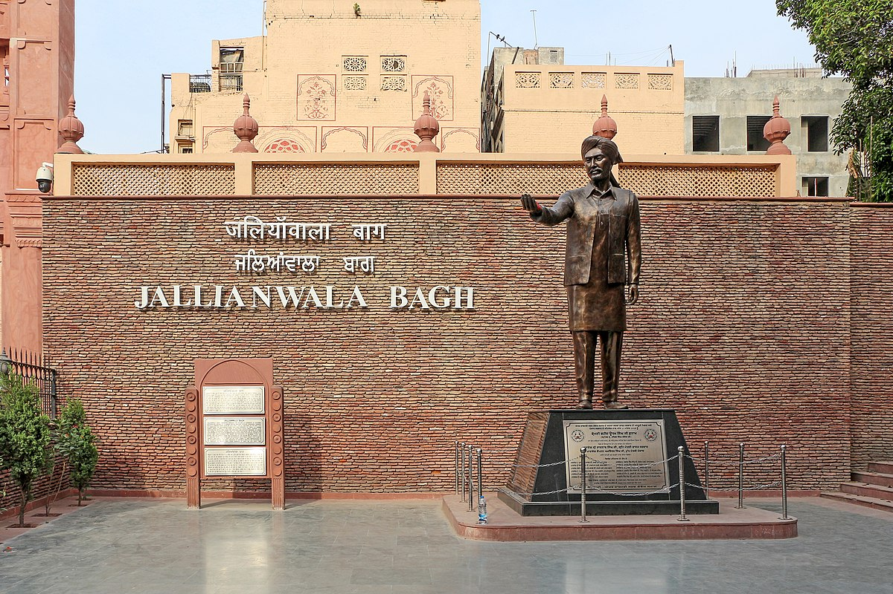
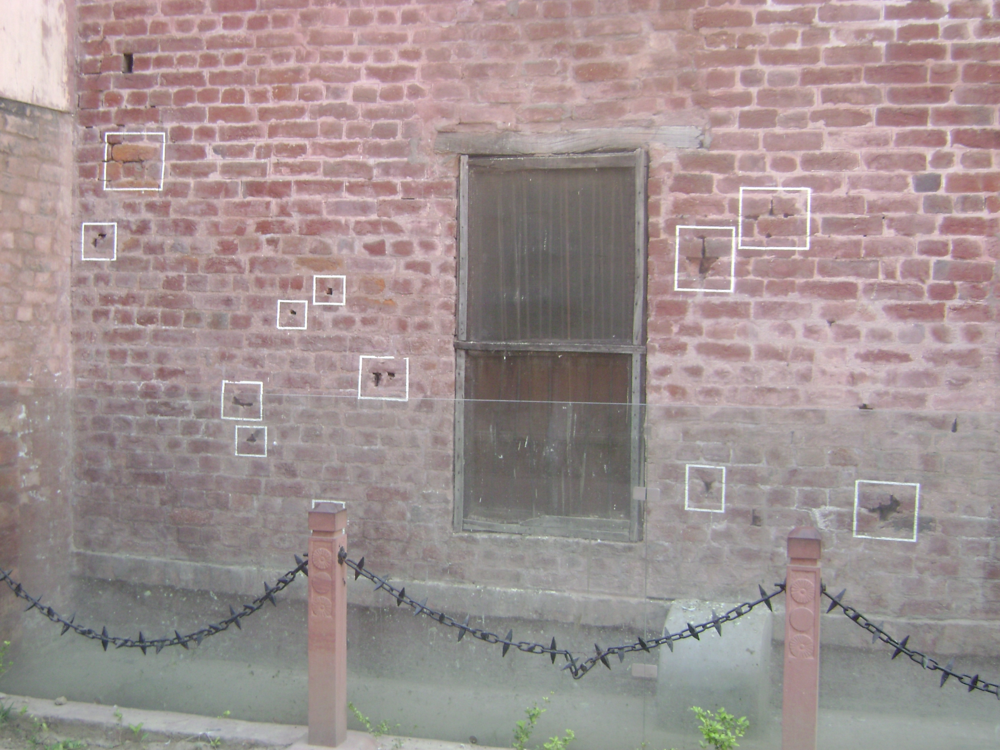
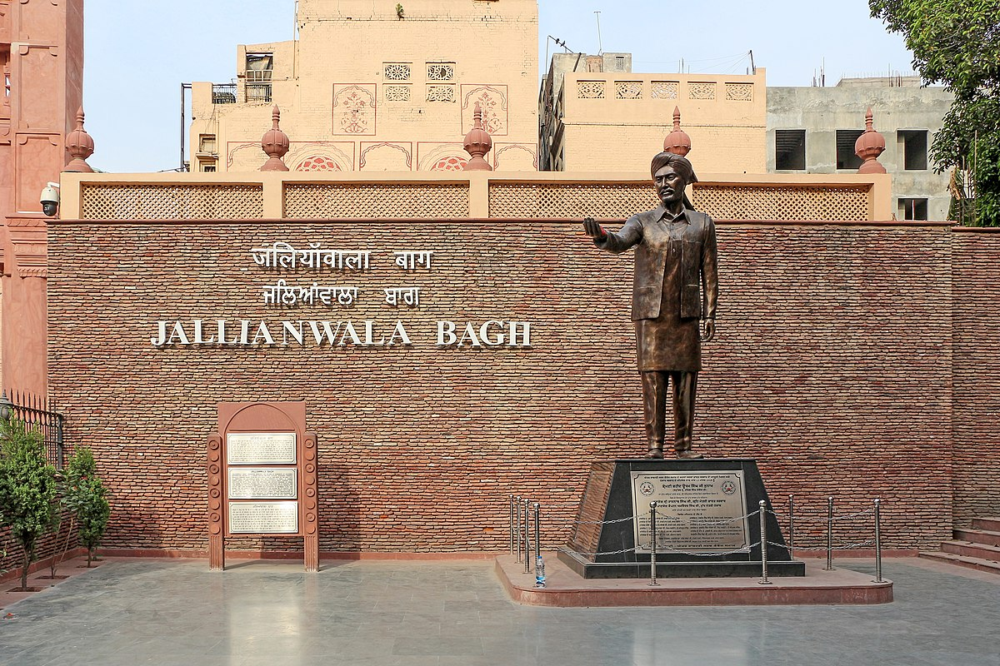
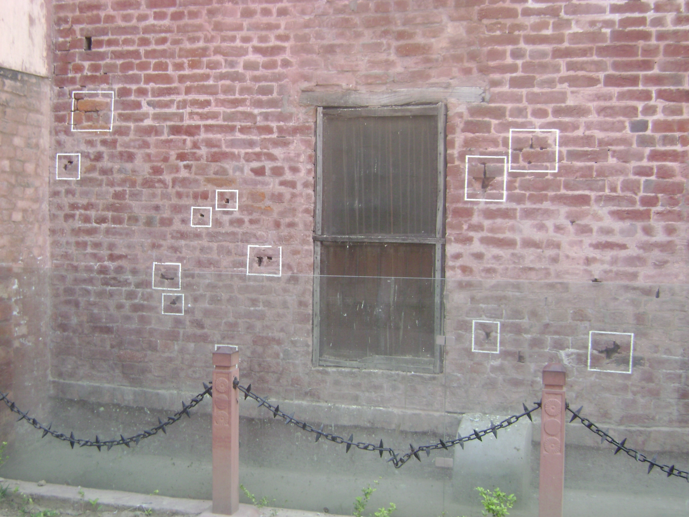
- Jallianwala Bagh is a historical garden located in Amritsar, Punjab, India.
- Massacre: On April 13, 1919, British troops under Colonel Reginald Dyer opened fire on a peaceful gathering of thousands of unarmed civilians who had gathered at Jallianwala Bagh to protest against oppressive laws. The incident resulted in hundreds of deaths and many more injuries.
Significance: The massacre became a pivotal moment in India's struggle for independence, galvanizing public outrage and intensifying the movement against British colonial rule. - Memorial Stone: The site features a memorial stone that marks the spot where the majority of casualties occurred during the massacre.
Martyrs' Well: A well inside the park, into which many people jumped to escape the gunfire, is preserved as a memorial.
Bullet Marks:Walls and structures within Jallianwala Bagh still bear bullet marks, serving as a stark reminder of the tragic event.
Flame of Liberty:A perpetual flame burns at the memorial, symbolizing the eternal flame of liberty and remembrance for the martyrs.
Museum:The Jallianwala Bagh Martyrs' Memorial Museum houses artifacts, photographs, and documents related to the massacre, providing visitors with historical insights. - Timing: Jallianwala Bagh is open to visitors from morning until evening. It's advisable to visit during daylight hours to fully appreciate the historical significance.
Entry:Entry to the park is usually free, but there might be a nominal fee for visiting the museum.
Guided Tours: Consider hiring a guide or joining a guided tour to learn in-depth about the events leading to the massacre and its aftermath.
Respectful Behavior:As it is a memorial site, maintain a respectful demeanor during your visit. Avoid loud conversations and follow any rules or guidelines set by authorities. - Anniversary: Every year on April 13, commemorative events and ceremonies are held at Jallianwala Bagh to honor the martyrs and reflect on the sacrifices made during India's struggle for independence.
Tributes: Visitors often pay their respects by laying floral tributes or lighting candles at the memorial.
History:
Features and Attractions:
Visiting Tips:
Commemorative Events:
Visiting Jallianwala Bagh offers a somber yet important experience, allowing visitors to connect with India's history of struggle and sacrifice for freedom. It's a poignant reminder of the price paid by many in the fight against oppression.
Wagah Border

- The Wagah Border is a famous border crossing point between India and Pakistan, located near the town of Wagah in Punjab, India.
- Name:Wagah Border Crossing Point
Location: Amritsar, Punjab, India (approximately 28 kilometers from the city center). - Timing:The Beating Retreat Ceremony takes place every evening before sunset, usually around 4:30 PM to 5:30 PM (timings may vary with seasons).
Duration:The ceremony lasts for about 45 minutes to an hour, including pre-ceremony activities and the main event.
Gates Opening:Visitors are allowed entry to the Wagah Border area a few hours before the ceremony begins. It's advisable to reach early to secure a good seating/viewing spot as it gets crowded quickly, especially on weekends and holidays.
Security Check:There is a mandatory security check before entering the Wagah Border complex, so carry only essentials and avoid carrying large bags or prohibited items. - The Beating Retreat Ceremony is a symbol of the border closing ceremony between India and Pakistan, marked by elaborate military drills, flag lowering, and coordinated movements by border security forces from both countries. Cultural Performances:
- Before the ceremony starts, enjoy lively music and dance performances by artists from both India and Pakistan, showcasing their respective cultural heritage. Flag Lowering Ceremony:
- The main event involves the lowering of the national flags of India and Pakistan in a synchronized and ceremonious manner, accompanied by loud cheers and patriotic chants from the audience. Crowd Participation:
- The atmosphere is charged with patriotic fervor, and visitors often join in singing nationalistic songs, waving flags, and expressing solidarity with their respective countries. Border Interaction:
- Witness the friendly and competitive exchanges between the border guards (Border Security Force of India and Pakistan Rangers), adding a unique and intriguing element to the ceremony.
- Arrival Time:Reach the Wagah Border at least 1-2 hours before the ceremony to secure a good seating/viewing spot.
- Comfortable Clothing:Wear comfortable clothing and footwear suitable for standing in open areas for an extended period.
- Photography:Photography and videography are allowed during the ceremony, but follow guidelines and avoid obstructing others' views.
- Respectful Behavior:Maintain decorum and respect during the national anthems and flag ceremony.
- Sun Protection: Carry sunscreen, hats, and sunglasses, especially during hot weather, as the ceremony takes place in an open area.
Location:
Beating Retreat Ceremony:
Experience at Wagah Border:
Patriotic Atmosphere:Tips for Visitors:
Experiencing the Beating Retreat Ceremony at Wagah Border is a memorable and patriotic experience, offering insights into the shared history and culture between India and Pakistan while showcasing the disciplined and synchronized efforts of the border guards.
Durgiana Temple (Durga Mandir)
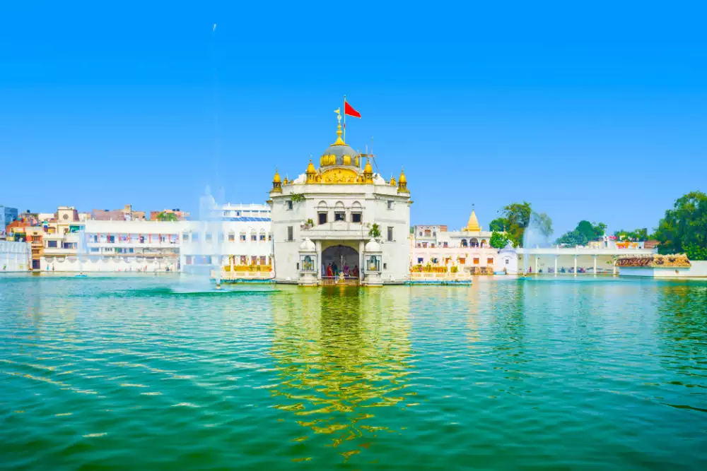 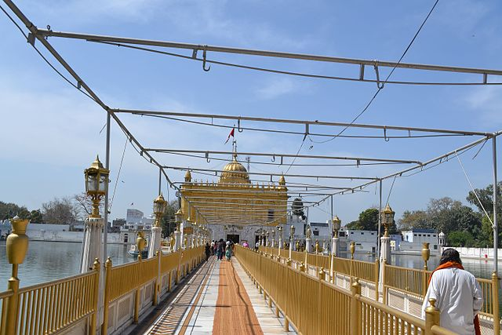 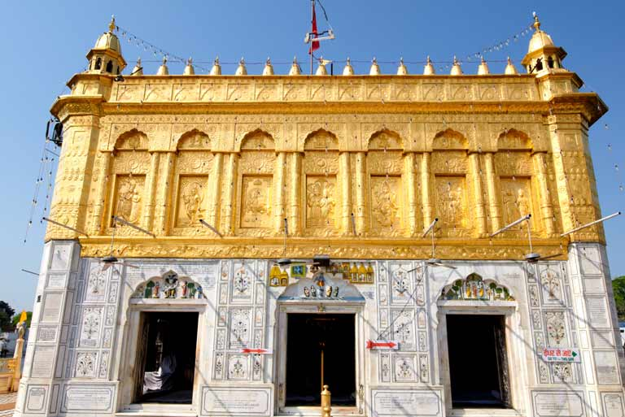The Durgiana Temple, also known as Durga Mandir, is a prominent Hindu temple located in Amritsar, Punjab, India.
Overview:
Key Features and Information:
Tips for Visitors:
Visiting the Durgiana Temple offers not just a spiritual experience but also a glimpse into the rich cultural heritage of Amritsar and the broader Indian tradition of devotion and worship.
Gobindgarh Fort
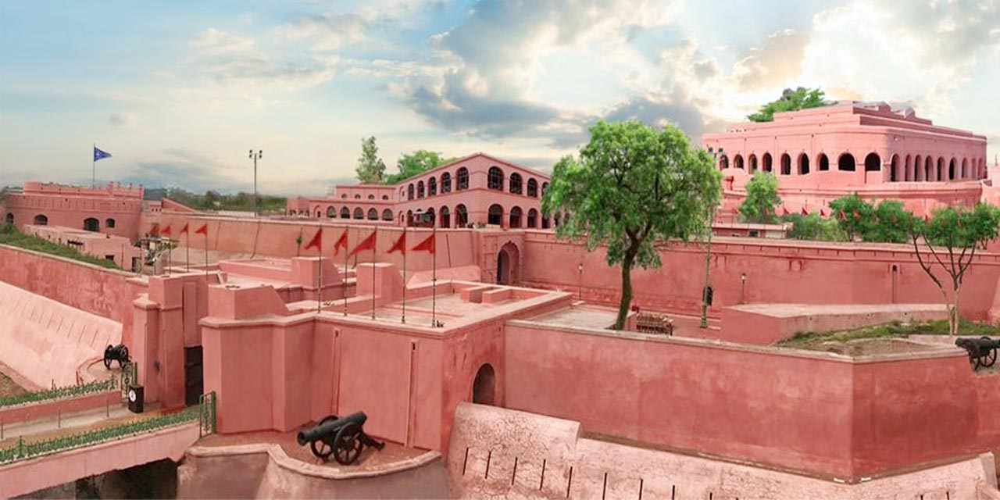 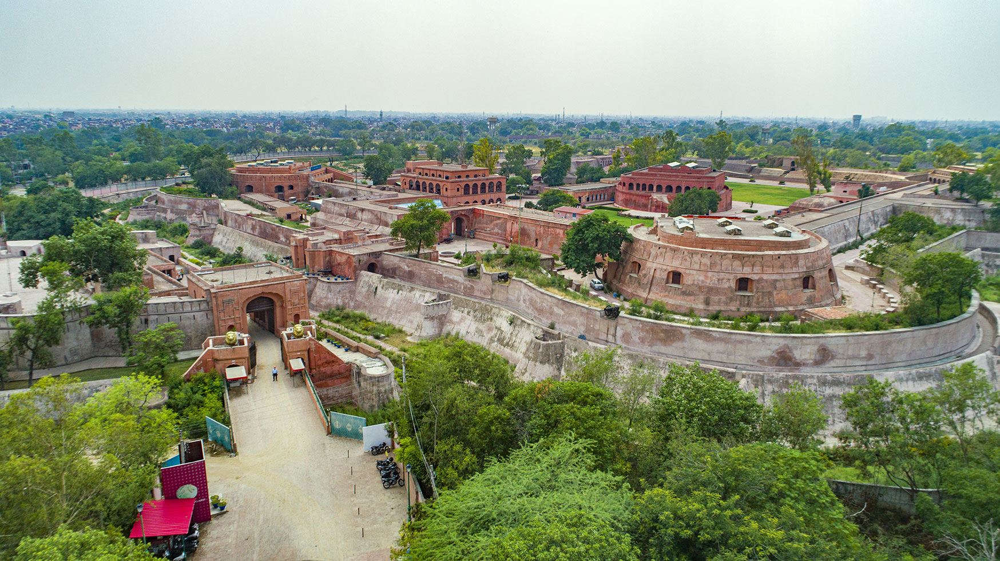 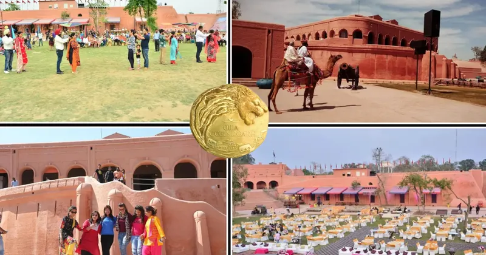Gobindgarh Fort, located in the city of Amritsar, Punjab, is a historic fort that holds great significance in the region's history and culture.
History:
Architecture and Layout:
Significance:
Attractions and Activities:
Museum and Exhibits:Enjoy cultural performances such as folk dances, music shows, and theatrical presentations depicting Punjab's vibrant culture and traditions.
Light and Sound Show:The fort offers an engaging light and sound show in the evening, narrating the fort's history, the life of Maharaja Ranjit Singh, and significant events in Punjab's history.
Food and Shopping:Explore food stalls offering traditional Punjabi cuisine and shop for souvenirs, handicrafts, and cultural items within the fort complex.
Events and Festivals:Gobindgarh Fort hosts various events, festivals, and cultural programs throughout the year, providing visitors with immersive experiences.
Visitor Information:
Location:Old Cantt Road, Vijay Chowk, Amritsar, Punjab, India.
Entry Fee:There is an entry fee to access the fort and its attractions, with separate charges for the museums and special shows.
Timing:The fort is open to visitors from morning till evening, with specific timings for the museums, shows, and cultural activities.
Visiting Gobindgarh Fort offers a unique opportunity to delve into Punjab's rich history, experience its cultural heritage, and appreciate the architectural marvels of the Sikh Empire era. It's a must-visit destination for history enthusiasts, cultural explorers, and anyone interested in the legacy of Maharaja Ranjit Singh and Sikhism.
Partition Museum
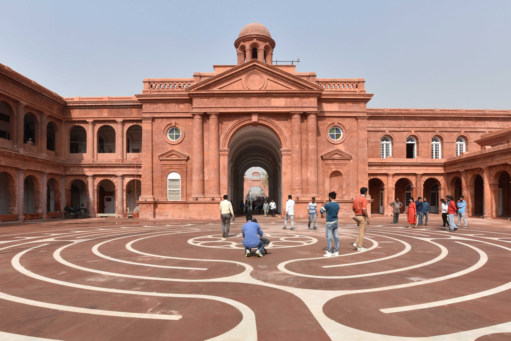 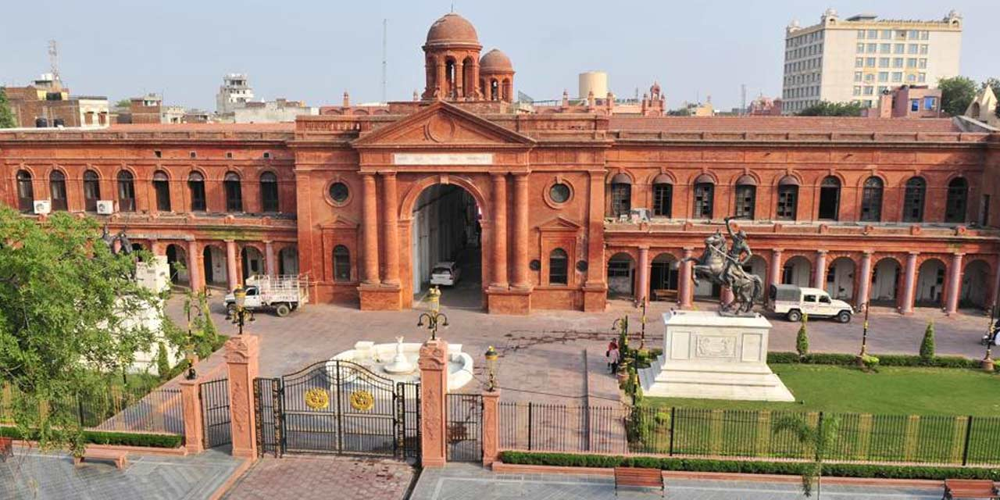 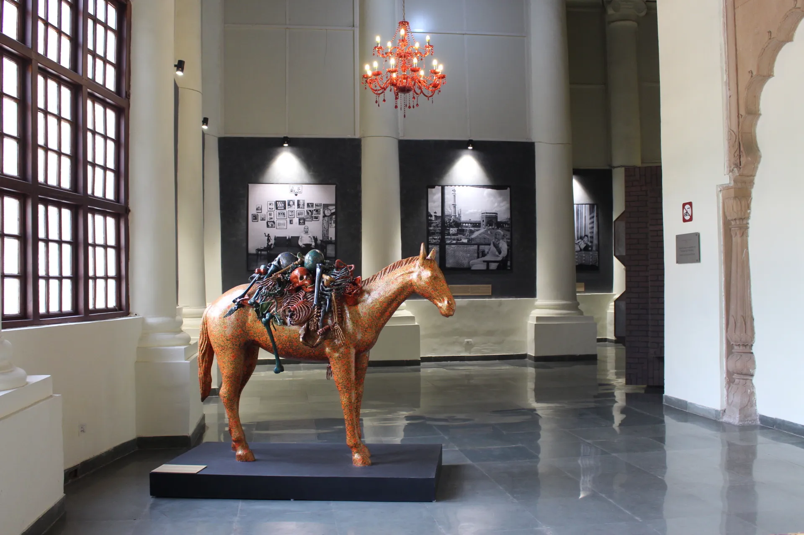The Partition Museum in Amritsar is a significant institution dedicated to preserving the memories and stories of the Partition of British India in 1947. It serves as a poignant reminder of the immense human suffering and the resilience of people during one of the largest migrations in history.
Location:
Town Hall, Amritsar, Punjab, India
Exhibits and Collections:
Visiting Tips:
Food Options:
Shopping:
Visiting the Partition Museum offers a profound and educational experience, coupled with opportunities to explore Amritsar's rich culture, cuisine, and shopping delights.
Maharaja Ranjit Singh Museum
 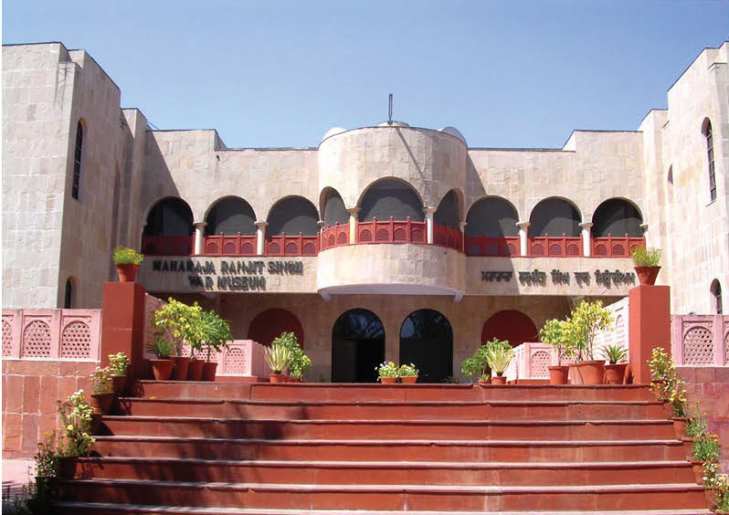
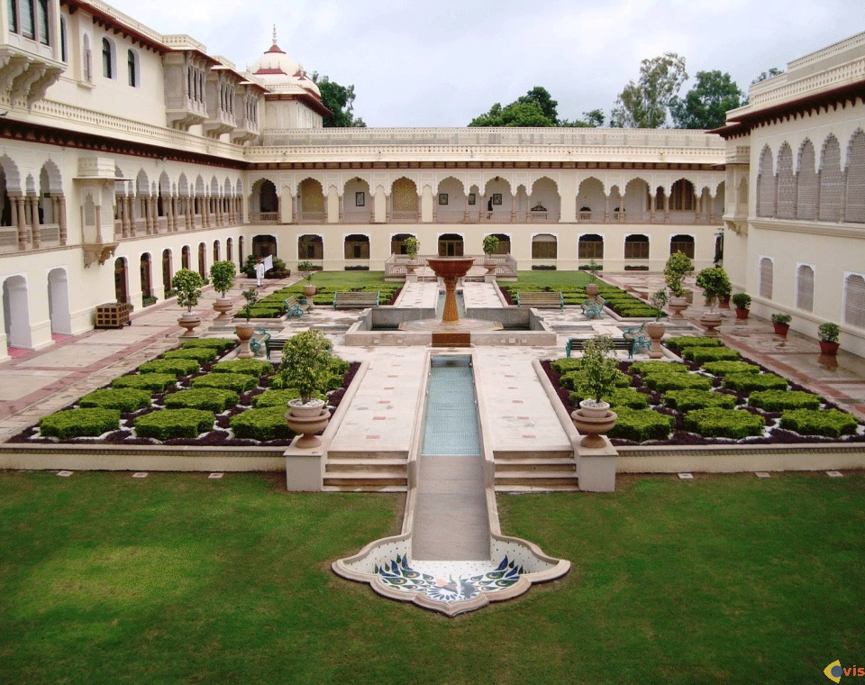
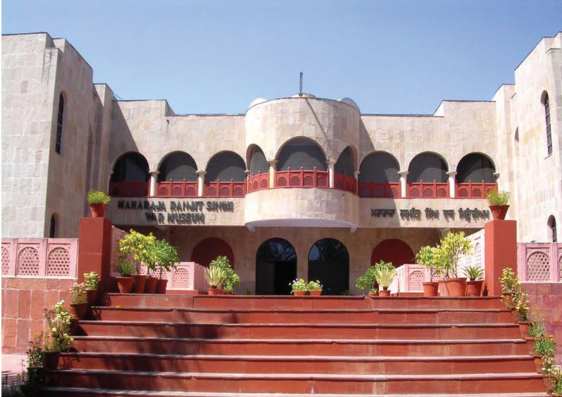
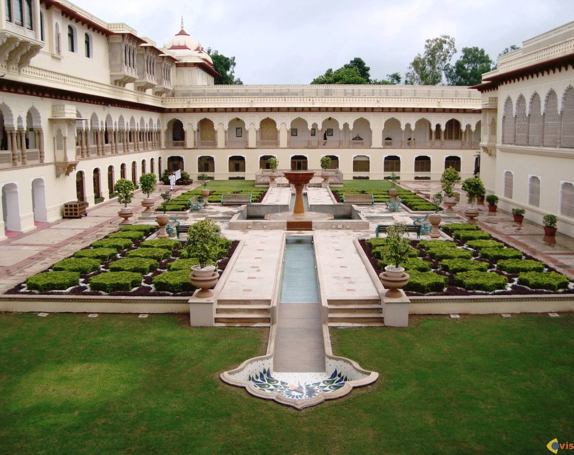
Maharaja Ranjit Singh Museum is located in the heart of Amritsar, Punjab, and is dedicated to showcasing the life, achievements, and legacy of Maharaja Ranjit Singh, the legendary Sikh ruler.
Maharaja Ranjit Singh Museum:
Museum Highlights:
Famous Food Options Nearby:
Shopping Options:
Visiting the Maharaja Ranjit Singh Museum offers a captivating journey into Punjab's royal history, complemented by delicious food options and vibrant shopping experiences in the surrounding areas.
Hall Bazaar and Katra Jaimal Singh Market
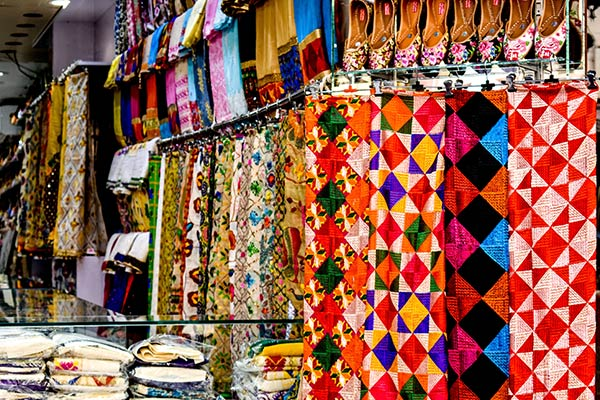 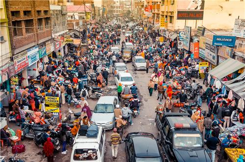 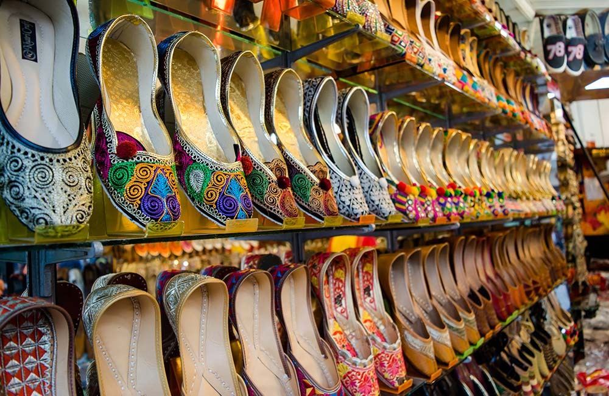Hall Bazaar and Katra Jaimal Singh Market are two bustling marketplaces in Amritsar, offering a vibrant mix of shopping, food, and local culture.
Hall Bazaar:
Food Delights:
Katra Jaimal Singh Market:
Shopping Highlights:
Food Delights:
Both Hall Bazaar and Katra Jaimal Singh Market offer a lively and colorful shopping experience along with opportunities to savor delicious Punjabi cuisine and explore local culture and heritage. These markets are must-visit destinations for tourists seeking an authentic Amritsari experience.
Ram Bagh Garden
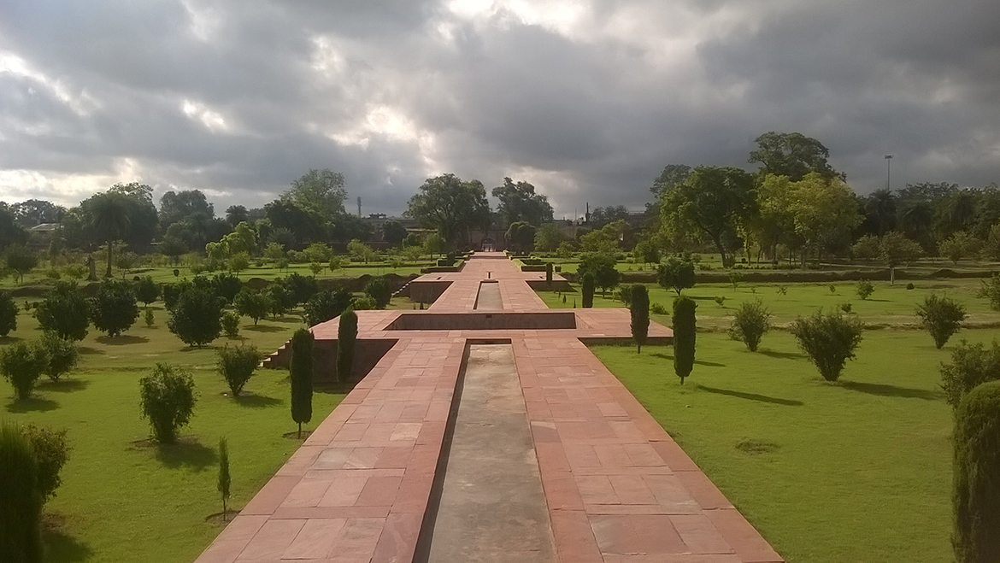 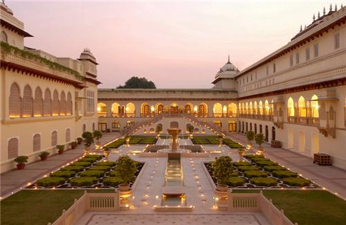 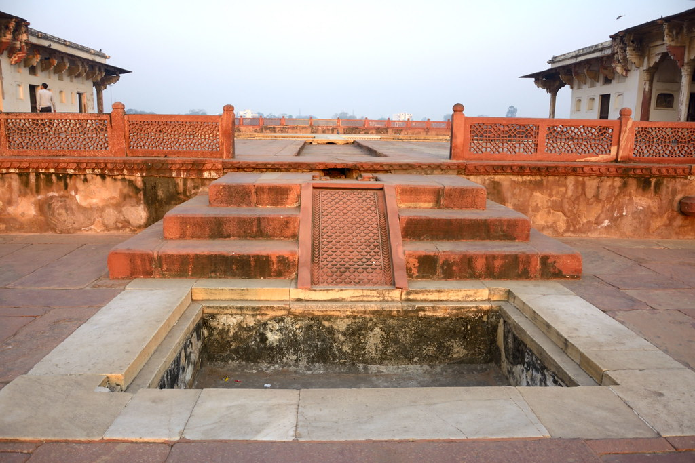Ram Bagh Garden in Amritsar, also known as Company Bagh, is a historic garden with lush greenery and significant cultural importance.
Ram Bagh Garden Overview:Garden Features:
Famous Food Nearby:
Shopping Options:
Ram Bagh Garden offers a serene escape amidst nature and historical significance, complemented by nearby culinary delights, shopping experiences, and cultural attractions in Amritsar.
Central Sikh Museum
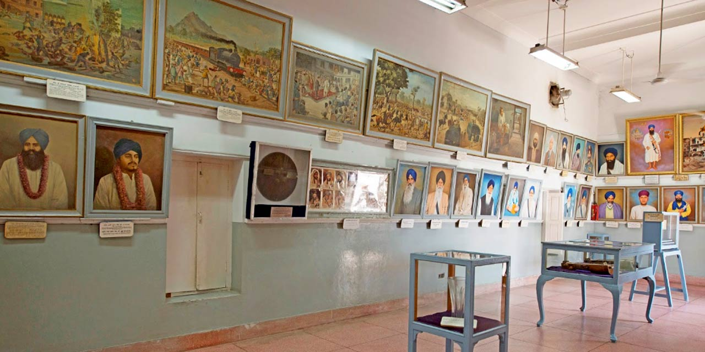 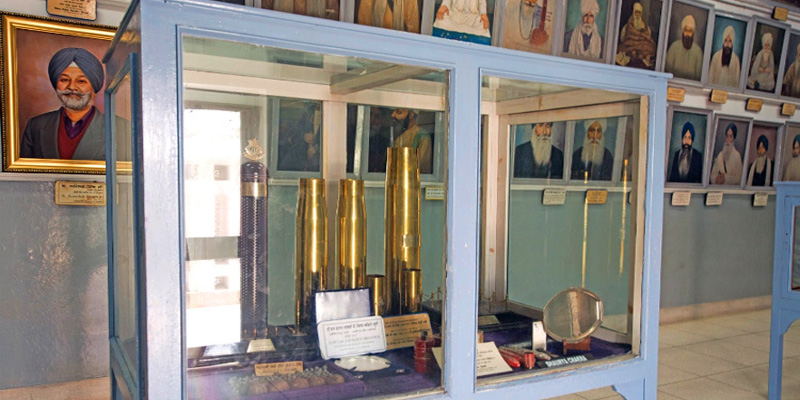 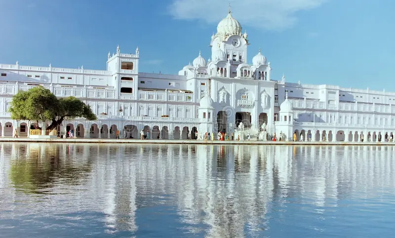The Central Sikh Museum, located within the Golden Temple complex in Amritsar, is a treasure trove of Sikh history, culture, and art.
Overview:
Key Attractions:
Visitor Tips:
Famous Food in the Area:
Shopping Recommendations:
Exploring the Central Sikh Museum, savoring delicious Punjabi cuisine, and indulging in local shopping experiences will enrich your visit to the Golden Temple and Amritsar, offering insights into Sikh culture, history, and culinary delights.